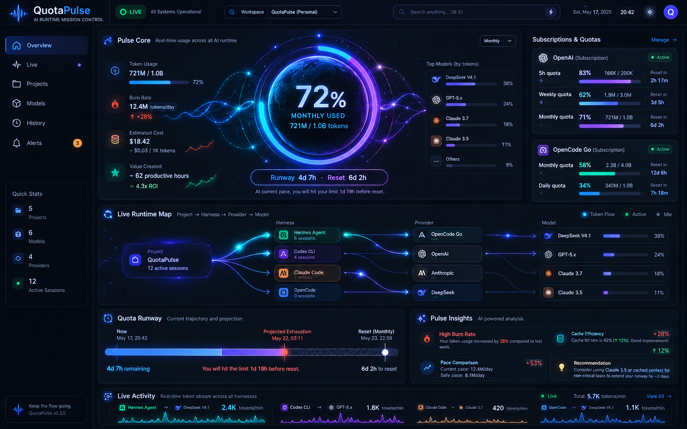
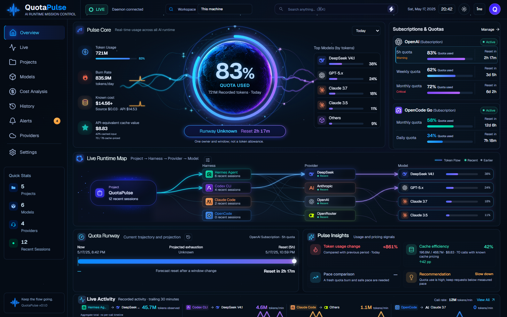
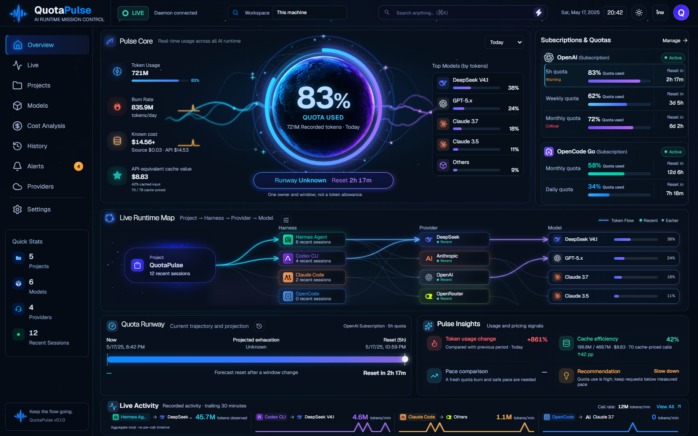

Application screenshots use an isolated synthetic fixture, fixed time and the reference viewport. Content differs from the concept because the application shows its own data. See evidence and limitations.


